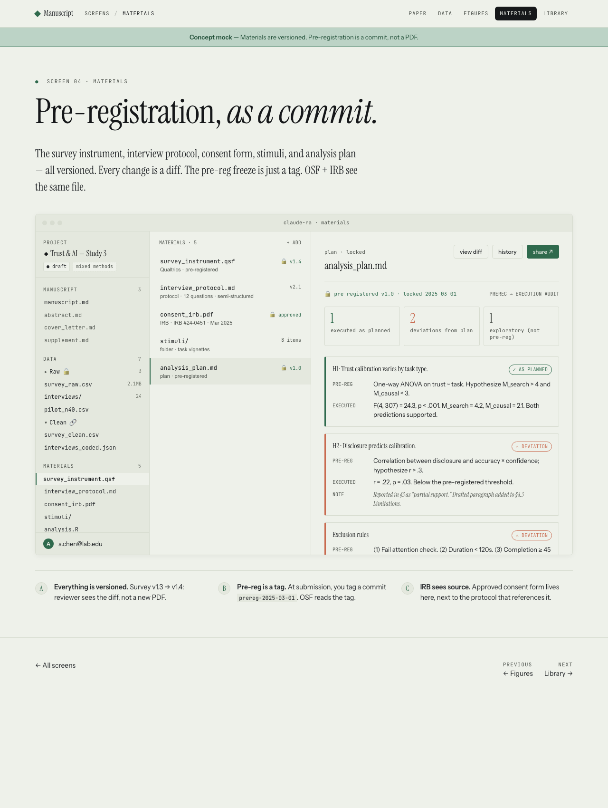
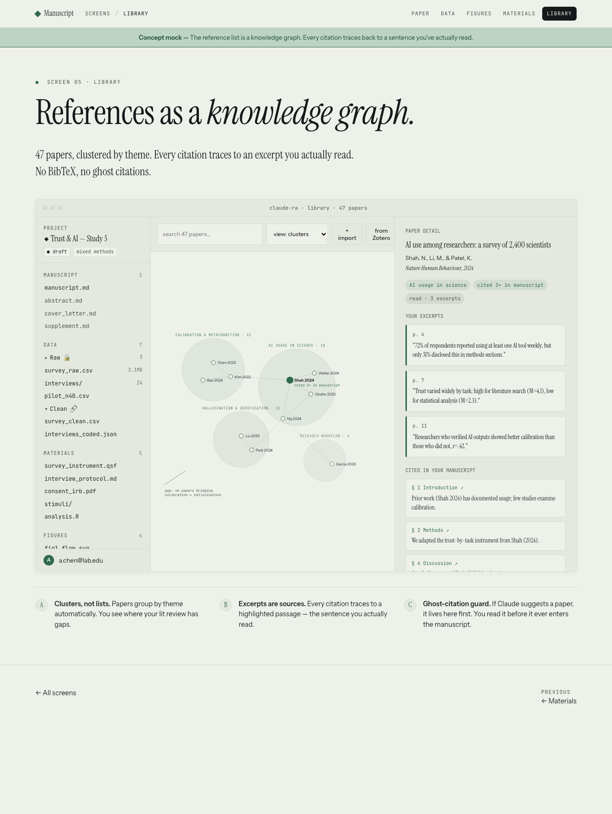
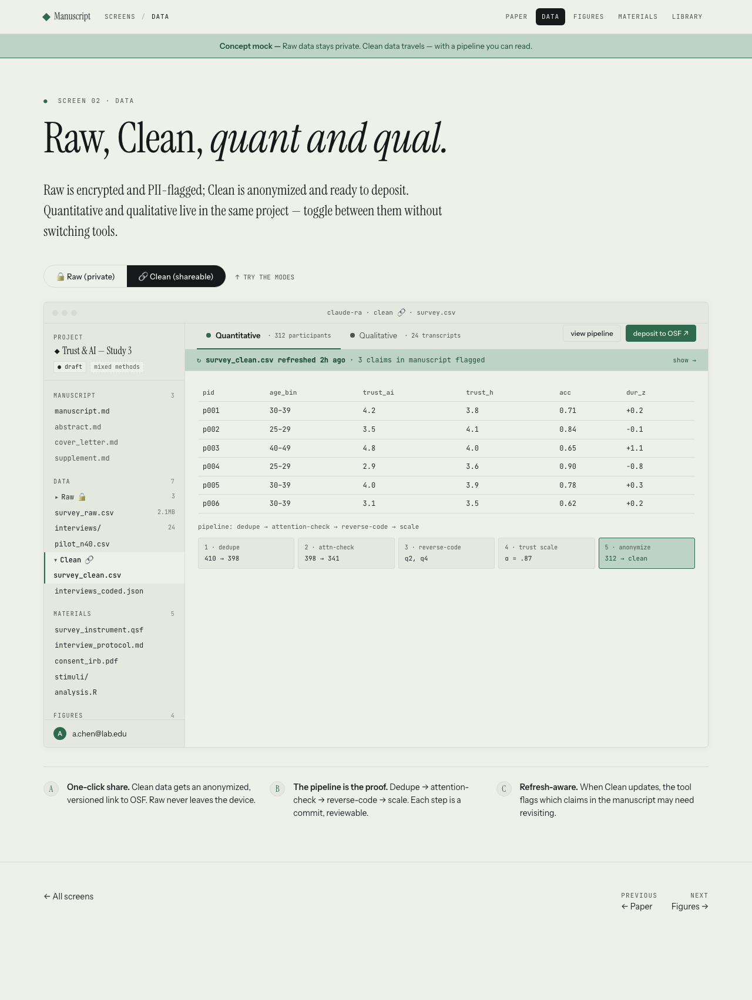
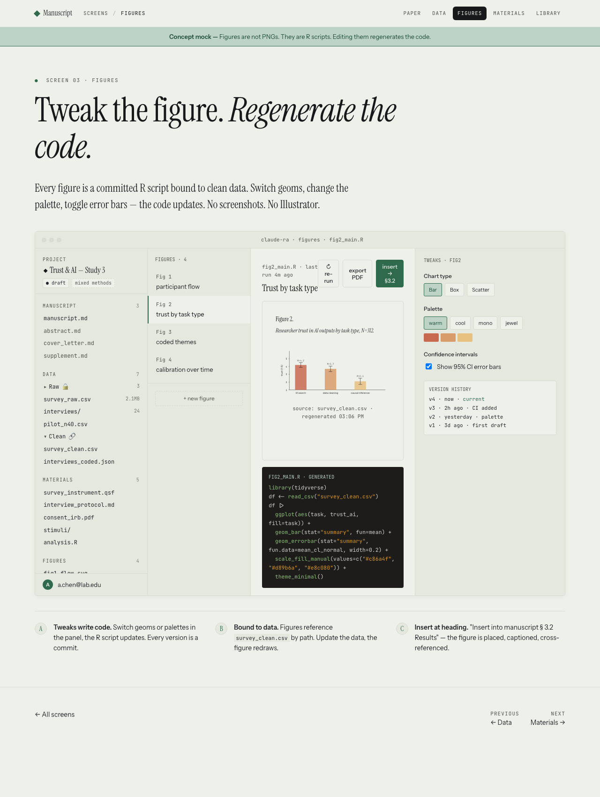

A product that doesn't exist. Mocked up by Claude Design in response to a prompt I wrote one afternoon.
Every empirical paper stands on its instruments — the survey I piloted, the interview protocol I wrote, the consent form the IRB signed, the analysis plan I committed to before the data came in. Today these live in fragments: a Qualtrics file here, a PDF there, an OSF tag somewhere else, an email to the IRB coordinator. In Manuscript they sit together, versioned.
The pre-registration is a commit, not a PDF. Every deviation from the plan is a row in an audit log — visible, named, and quietly drafted into the limitations paragraph for me to tighten later.

The papers I've read, dozens of them, most of which I've only half-digested. In Manuscript the library is a graph, not a list. Papers cluster by theme. Each one I've read has a set of highlighted excerpts, and those excerpts are the provenance of every citation in my draft. Nothing gets cited that I haven't actually read; the tool won't let me.

Raw and Clean live side by side. Raw is encrypted, PII-flagged, never leaves the device. Clean is anonymized, pipeline-traced, ready to deposit at OSF. Quantitative and qualitative — the survey and the interviews — share one workspace, because they're one project, even though the field usually treats them as two.
When Clean updates — say a round of late respondents comes in — the tool tells me which claims in the draft might need a second look.

I've never quite understood why the figures in a paper get treated as artifacts, baked into a PNG the moment I paste them in. In Manuscript a figure is a live R script bound to clean data. Tweak a palette, toggle error bars, swap a geom — the figure redraws, the script regenerates, and each version is a commit. When the data refreshes, the figure refreshes too. No more re-export, re-paste, hope it's the right version.

One file, three views. Draft is where I write. Publication is what the journal sees — typeset, two-column, with a significance statement and a masthead. Interactive is what a reader sees on the web, where the numbers are live and they can filter the data themselves. The text doesn't change between views; the template does. Switching journals is switching a template, not re-formatting.
Scientists increasingly rely on AI assistants for data analysis, literature review, and writing. We combine a pre-registered survey (N=312) with 24 semi-structured interviews to characterize calibration — when scientists appropriately trust, verify, or override AI-generated outputs. Trust is highest for literature search (M=4.2) and lowest for causal inference (M=2.1).
The adoption of large language models in scientific workflows has outpaced empirical understanding of how researchers verify, cite, and delegate work to these systems. Prior work (Shah 2024; Okafor & Chen 2025) has documented usage; few studies examine calibration.
Participants (N=312) were recruited via Qualtrics panel. The interview protocol is in materials/interview_protocol.md.
As scientists delegate more analytic and writing work to AI assistants, whether they appropriately trust these outputs becomes a determinant of research quality. We show that trust calibration varies systematically by task — appropriate for descriptive work, dangerously high for causal claims.
Scientists increasingly rely on AI assistants for data analysis, literature review, and writing. We combine a pre-registered survey (N=312) with 24 semi-structured interviews to characterize calibration — when scientists appropriately trust, verify, or override AI-generated outputs. Trust is highest for literature search (M=4.2) and lowest for causal inference (M=2.1). The gap narrows with experience and PhD training but does not close.
The adoption of large language models in scientific workflows has outpaced empirical understanding of how researchers verify, cite, and delegate work to these systems (1, 2). Prior work has documented usage patterns; few studies examine calibration — whether researchers' confidence in AI outputs scales appropriately with the accuracy of those outputs.
Calibration matters because miscalibration is not symmetric. Under-trust leads to wasted verification effort. Over-trust leads to propagation of errors into the literature, with second-order consequences for meta-analysis and policy (3–5).
Across all participants, mean trust was M=3.4. Filter by discipline:
Trust varied by task type. For literature search, M=4.2 (95% CI: 4.07–4.33). For causal inference, M=2.1 (1.95–2.25). The gap is Δ=2.1.
The researcher still exports to LaTeX, chases citations across three open tabs, re-typesets for each journal's style guide, and reconciles co-author revisions by email. That work — the paperwork around the argument — is still where most of the hours go, between a finished thought and a finished paper.
But it's worth imagining what it could look like if that weren't true. Which is, really, all I set out to do.
← back to the note